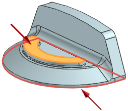
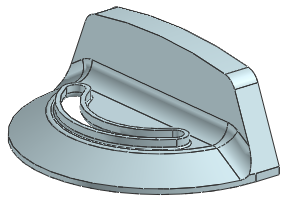
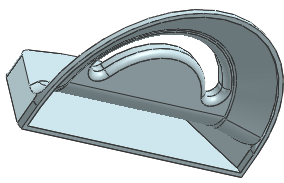

Create a shell
-
On the Feature toolbar, click Shell .
-
In the Type list, make sure Remove Faces, Then Shell is selected.
-
In the Preview group, clear the Preview check box.
-
Select the top planar face of the slot profile and the bottom planar face of the part.

-
In the Thickness box, type 2.5.
-
Click Show Result
 .
.

-
Rotate the part and make sure the correct faces were removed.

-
Click OK.
-
Close the part.